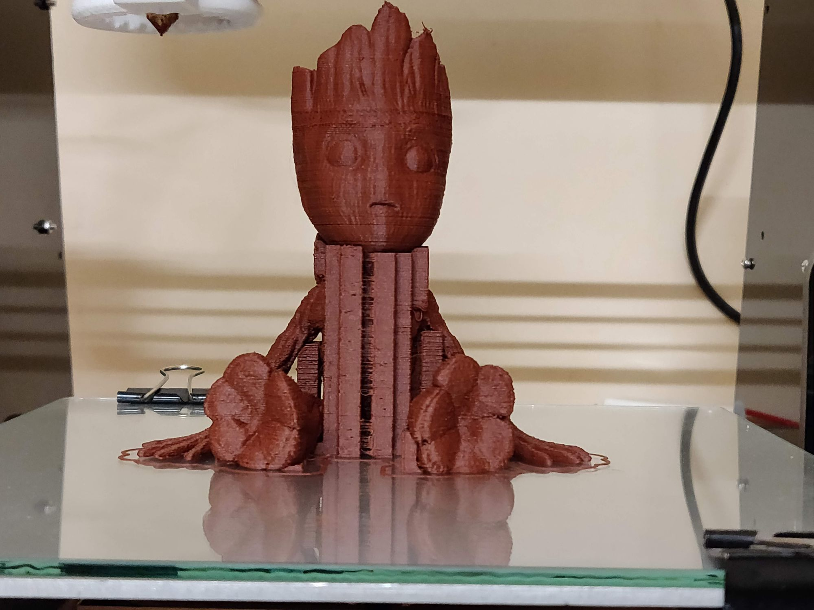
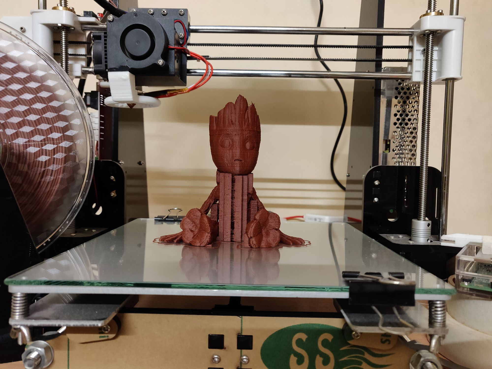
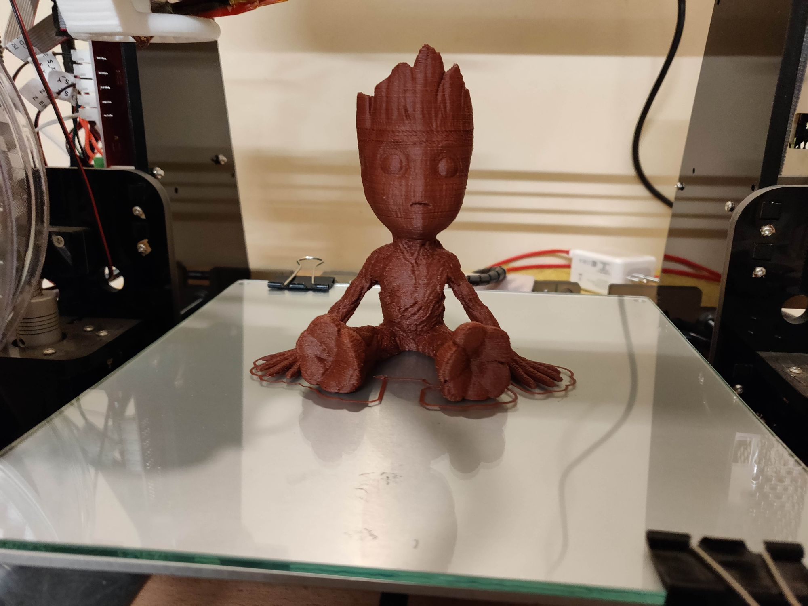
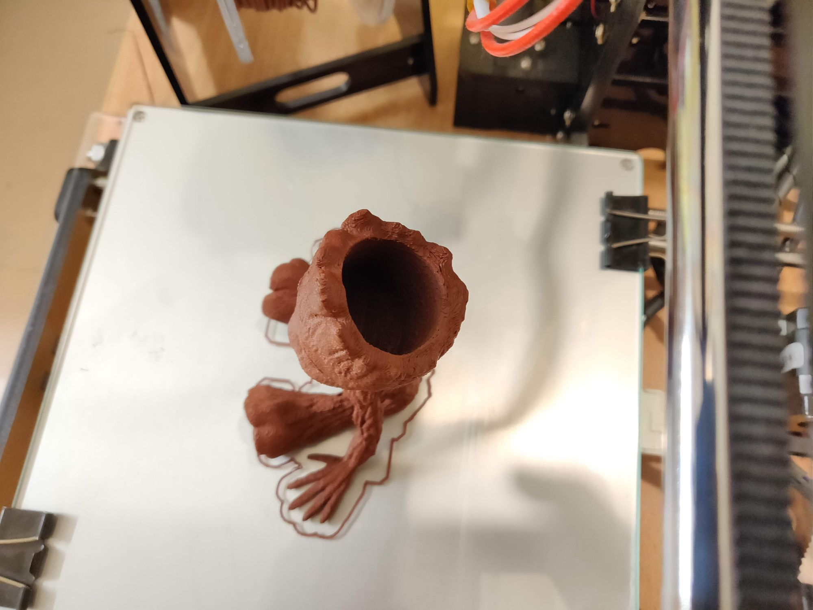
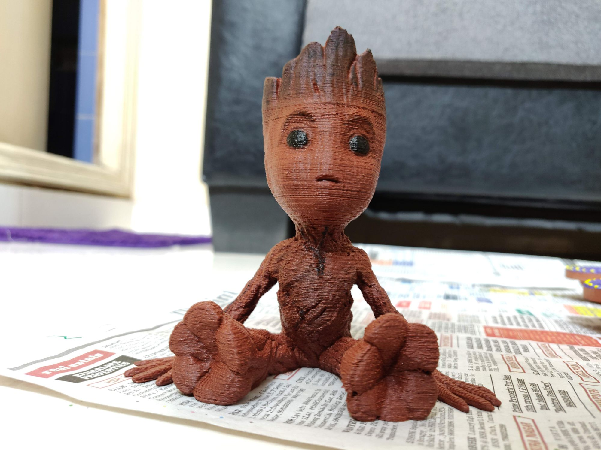

This was my first time using an infill filament. I brought a complete woodfill PLA roll just for printing groot (which turned out to be a mistake 😅).
This is a amazing model I found on thingiverse by Julia. Its a planter, with not enough space for good plants. I ended up using fern/moss like plant from by backyard, that can grow with very little soil.
Settings on my Printer(Anet A8) –
Layer height – 0.2000 mm
Extruder temp – 180 C
Print Speed – 60mm/s
Supports – Yes (Automatic with manual editing)
Increased Retraction distance by 0.5 mm. This is because the wood filament has less glass transition temp and results in oozing and stringing.





I ended up placing it on my office desk.